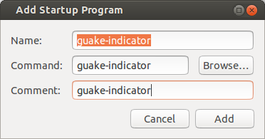

- Guake Indicator
What is Guake indicator?
Guake indicator is a compact and convenient Ubuntu Appindicator that lets you send commands and customized tasks to Guake terminal. Guake is a free, open source, top-down terminal written in Python by Max Ulidtko,Pierre-Yves Chibon, Aleksandar Krsteski, Lincoln de Sousa, Gabriel Falcão and it's part of the Debian and Ubuntu project.Although Guake indicator was meant for Ubuntu it should work on any Debian based Operating System using The Gnome Desktop Environment.
This page refers to guake-indicator version 1.0 and later, if you want to read the old documentation about previous releases click here.
Guake-indicator sticks to your "Ubuntu Indicator Area" and displays your customized command retrieved from ~/.guake.indicator/guake-indicator.xml. If this file doesn't exist, Guake Indicator will create a small default one that you can use as a base to build your own configuration file depending on your needs.
You can customize the configuration file using the Guake indicator built-in GUI under the "Edit Menu" section or, as an alternative, you can do it on your own with your favorite text/xml editor. The guake-indicator.xml fields are quite self-explanatory, however, I'm going to give you a more in-depth description of each one:
- menu_name :the name that will show up in the indicator itself
- tab_name : the name of the Guake terminal tab once it is opened (leave blank if you don't want automatic autorenaming)
- command_after_login : command to send to Guake through his DBUS interface
- dont_show_guake : if set to yes Guake is not shown after command execution
- open_in_tab : The index of the Guake tab where Guake indicator will execute the command. Guake assigns index 0 to the first tab so put in this field the nth tab-1
number. If this tag has the attribute named="yes" it contains the name of the Guake tab (see Guake indicator select tab by name issue for more informations)
If this field contains the value '-1', Guake indicator will execute the command in the currently selected Guake tab (only from version 1.1) - lfcr : if set to yes a LF (Line Feed) + CR (Carriage return) is sent to Guake after each line. Otherwise, only a line feed (ascii code 10) is sent.
- guakeindicatorscript : if set to yes enables the Guake indicator scripting function (see related scripting section)
For more information about how the configuration file must be created you can download the XSD Schema validation file.
Launching at startup
You can launch Guake indicator at startup using Ubuntu "startup application" then fill in the form according to the following screenshot:
If Guake is not started, Guake indicator, when invoked, will launch it automatically.
Requirements for Guake indicator
For proper compilation and functionality of Guake indicator, the
following packages are REQUIRED:
- libappindicator-dev
- libcairo2-dev (>= 1.10)
- libdbus-1-dev
- libdbus-glib-1-dev
- libglib2.0-dev (>=2.35.4)
- libgtk-3-dev (>=3.1.4)
- libjson-c-dev (for backward compatibility)
- libxml2-dev
- python-beautifulsoup
- libgconf2-dev
Special Thanks to all Contributors.